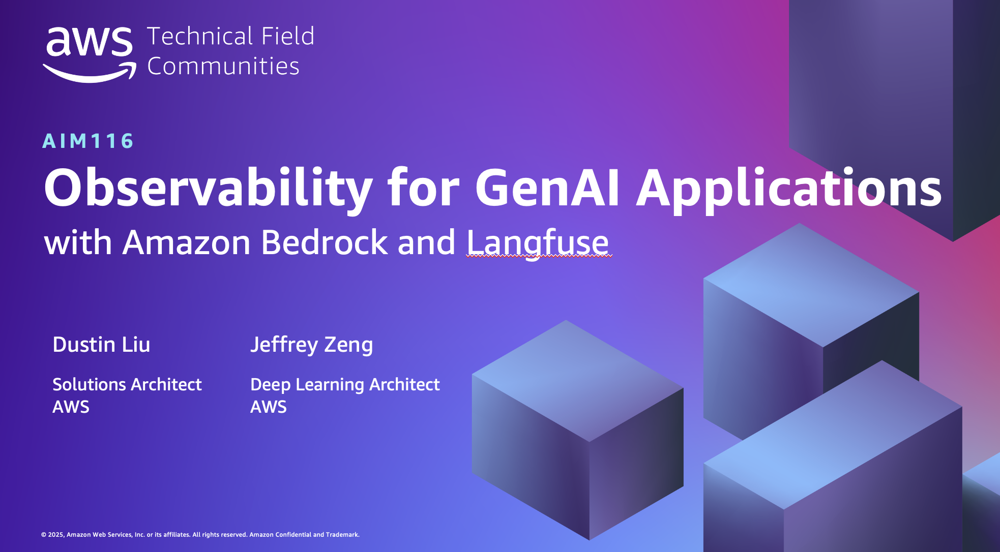
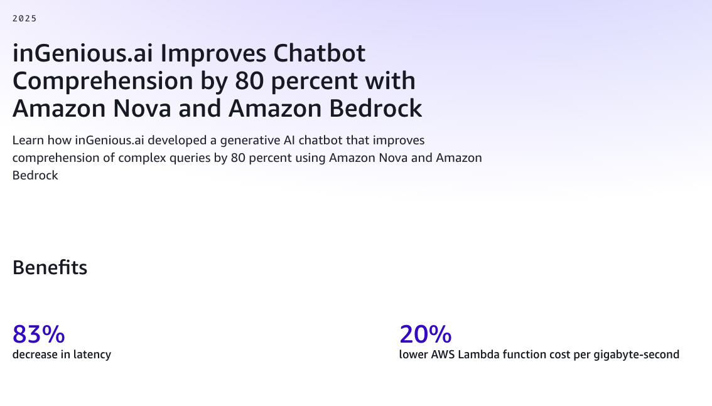
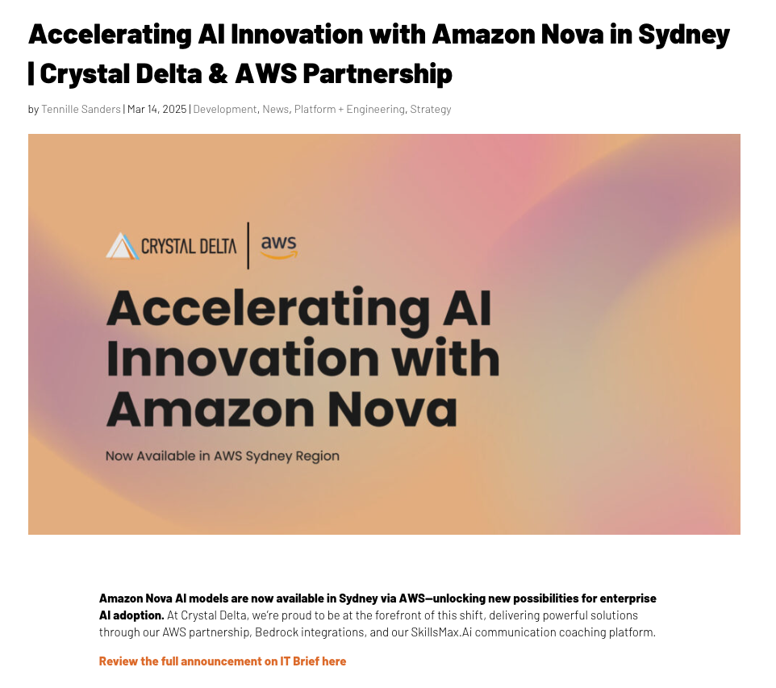
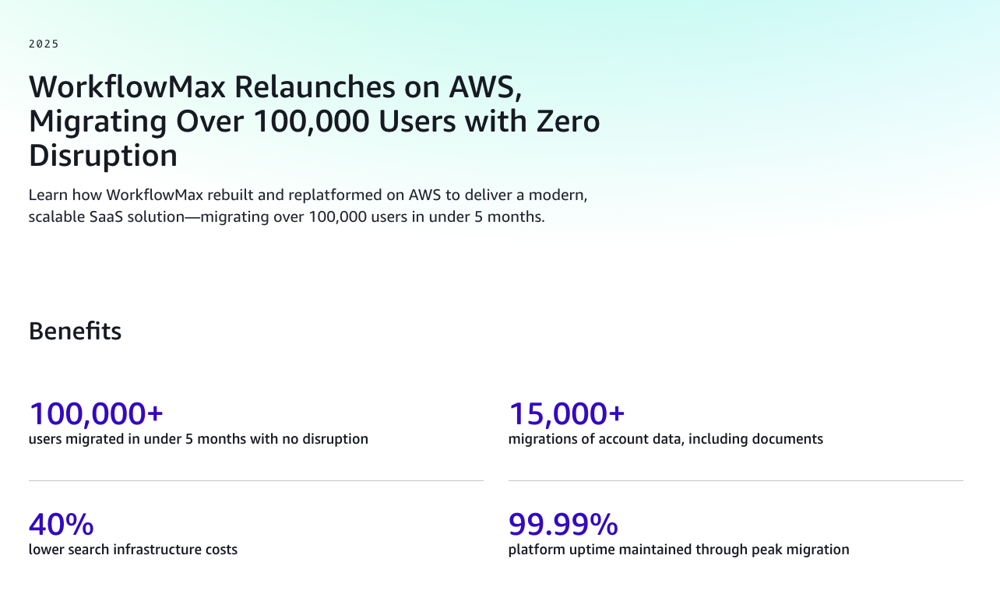
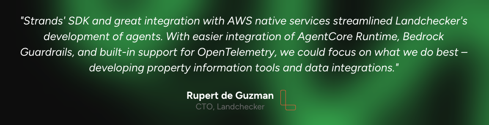
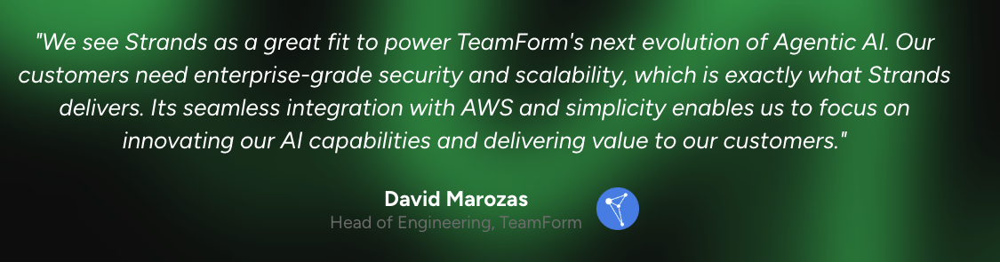

0
Published Blogs
0
Talks & Events
0
Case Studies
0
Workshops
0
Customer Quotes
AWS Blogs & Prescriptive Guidance
ML / Generative AI / Agentic AI
Democratizing Business Intelligence: BGL's Journey with Claude Agent SDK and Amazon Bedrock AgentCore
ML / Generative AI / Agentic AI
Generative AI Lifecycle Operational Excellence Framework on AWS
ML / Generative AI / Agentic AI
Enhance Deployment Guardrails with Inference Component Rolling Updates for Amazon SageMaker AI Inference
ML / Generative AI / Agentic AI
Scaling Agentic Coding Tools Like Claude Code Across Your Organization
ML / Generative AI / Agentic AI
Deploying Claude Agent SDK on Amazon Bedrock AgentCore Runtime
Deep Dives, Summit Speaking & Hackathon
2025 OneANZ Agentic Hackathon
Multi-Agent Powered Property Buyer Agency
Hackathon
ML / Generative AI / Agentic AI
Video Q&A with Amazon Bedrock and Marqo AI
AWS Joint Customer Solution
ML / Generative AI / Agentic AI
Observability for GenAI Applications with Amazon Bedrock and Langfuse
TFC Summit ML / Generative AI / Agentic AI
GenAIOps with Langfuse
Tech Summit
ML / Generative AI / Agentic AI
Scaling Generative AI in Production with Amazon Nova
Sydney Summit
Data Analytics
Frugal Data Foundation for AI with Athena, DBT and Iceberg
Tech SummitCustomer Case Studies
ML / Generative AI / Agentic AI
WorkflowMax Intelligent Document Processing

ML / Generative AI / Agentic AI
Ingenious AI Amazon Nova LLM Case Study
ML / Generative AI / Agentic AI
CrystalDelta Amazon Nova LLM Case Study
ML / Generative AI / Agentic AI
inGeniousAI re:Invent 2025 Keynote Highlight
Keynote
Migration
WorkflowMax AWS Migration Case Study
Customer Quotes on AWS Services
“
ML / Generative AI / Agentic AI
Unlock Cost Savings with the New Scale Down to Zero Feature in SageMaker Inference
Customer: Fortiro
“
ML / Generative AI / Agentic AI
Amazon Strands Agents SDK
Customer: Landchecker

“
ML / Generative AI / Agentic AI
Amazon Strands Agents SDK
Customer: TeamForm

Hands-on Workshops
ML / Generative AI / Agentic AI
Agentic AI with Claude Agent SDK and Amazon Bedrock AgentCore
ML / Generative AI / Agentic AI
Supercharge Your Development with Claude Code on Amazon Bedrock
ML / Generative AI / Agentic AI
GenAI Ops with Langfuse
Internal Toolings & Demos
Contributor